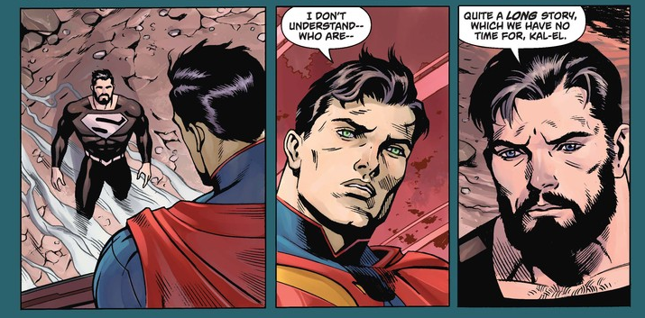

That was one of the main questions asked in Superman: Rebirth #1, when Lana Lang and the post-Crisis Superman worked together to try to figure out if "New 52" Superman might return from the dead. After all, post-Crisis Superman remembered that he was brought back to life once.
But according to that issue, the regeneration matrix that brought post-Crisis Superman back to life didn't exist on the "New 52" Earth - or at least he couldn't find it at the Fortress of Solitude.
By the end of the issue, post-Crisis Supes seemed convinced that his "New 52" counterpart might actually stay dead.
However, there are new theories emerging about just how much the current Superman stories appear to be echoing the original "Death of Superman" storyline. (And perhaps it's not an accident that Dan Jurgens, who was instrumental in the creation of "Death of Superman" is now involved with "Rebirth"'s Superman stories as writer of Action Comics as well.)
For example, in Superman and Action Comics, two of the key villains featured since the "Rebirth" relaunch have been Eradicator and Doomsday - two characters linked to the "Death of Superman" story.
There are also, currently, a lot of Super-folks flying around the DCU, taking "New 52" Superman's place after his death. There's Superwoman, Supergirl, a New Super-Man, Lex Luthor in a Super-suit, and even the Clark White dude who's apparently from a parallel universe.
For long-time Superman fans, this might sound similar to the "Reign of the Supermen!" storyline that followed on the heels of the first "Death of Superman" storyline in the 1990s. After Superman died - and everyone believed he wasn't coming back - new heroes Steel, Cyborg Superman, Superboy and the aforementioned Eradicator.
Plus, the "New 52" Superman's powers are still coursing through the veins of some of these characters - or he's related to them in some way. The new Superwoman literally got her powers from "New 52" Superman. And the New Super-Man was also created by utilizing "New 52" Superman's powers. And Supergirl is his biological cousin.